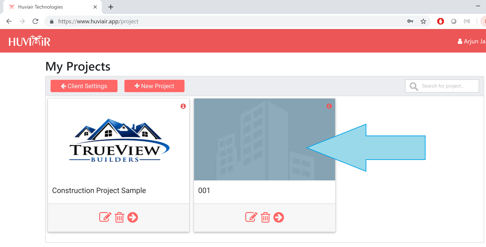
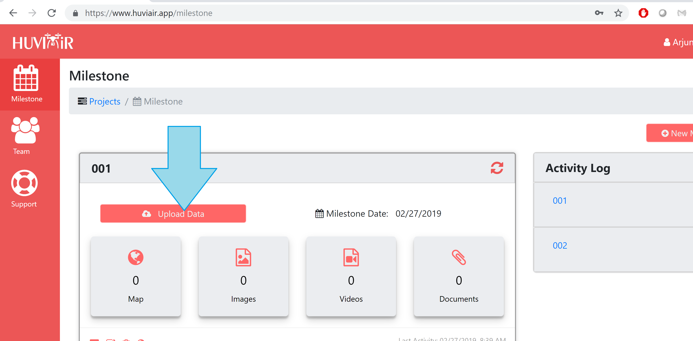
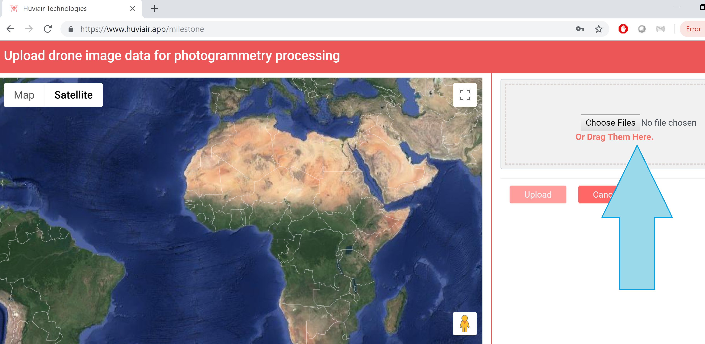
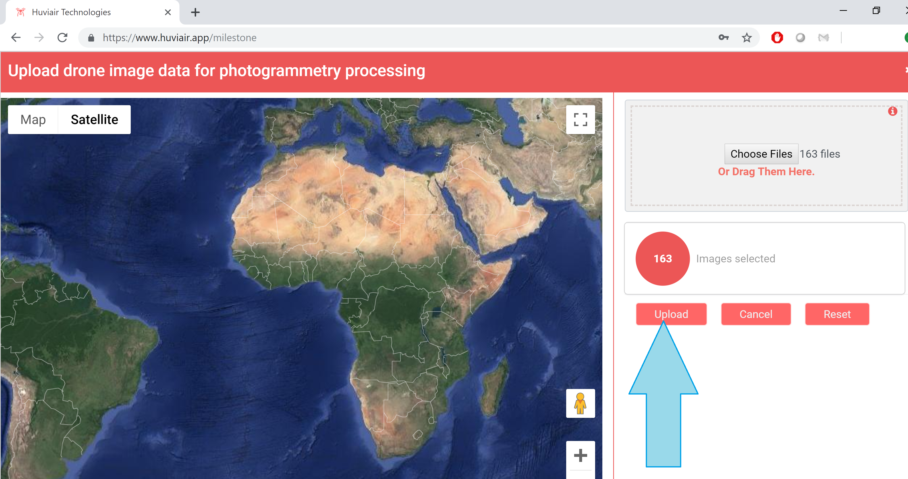
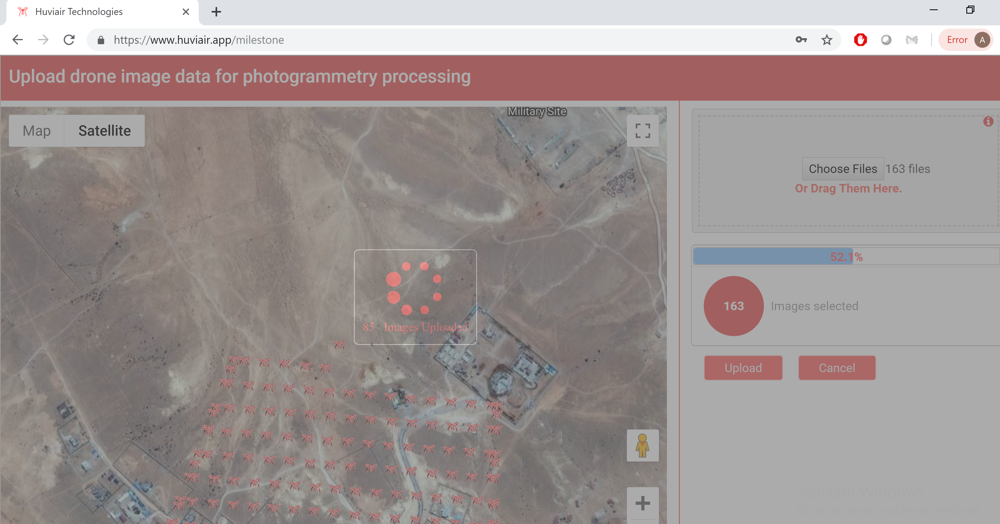
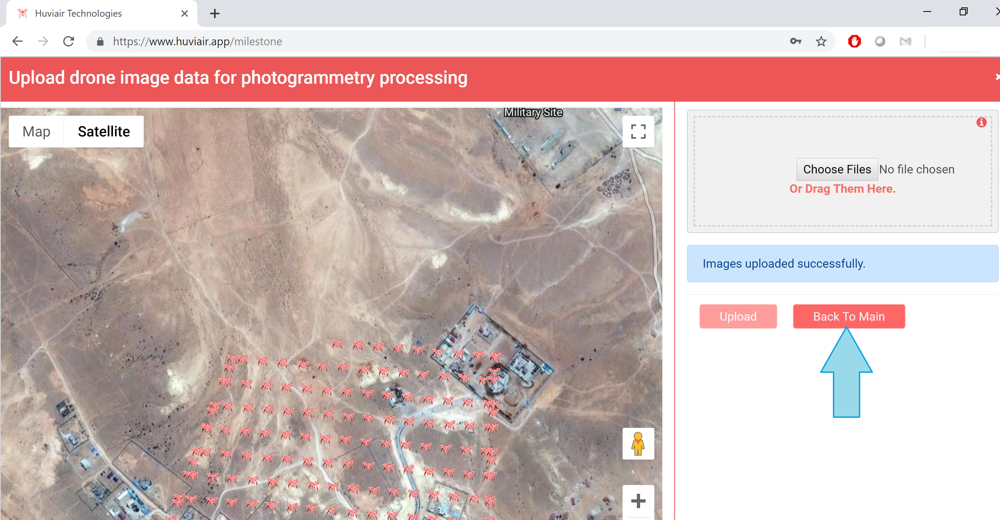
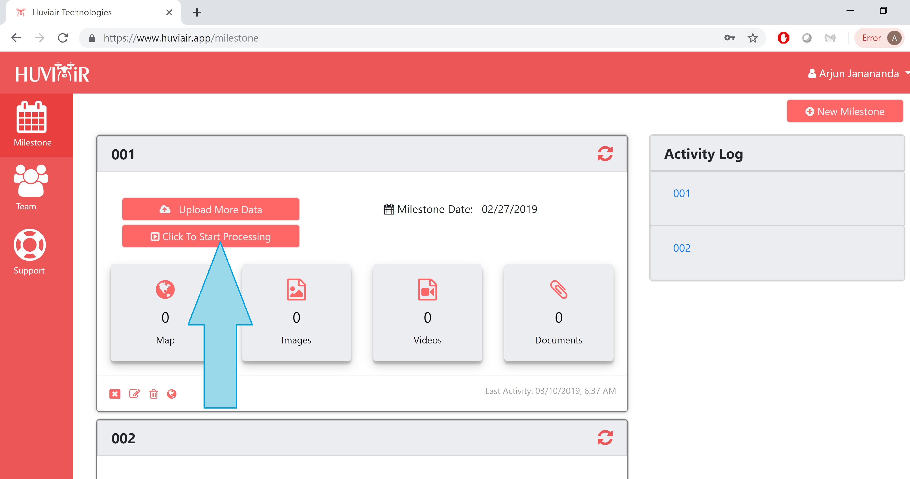
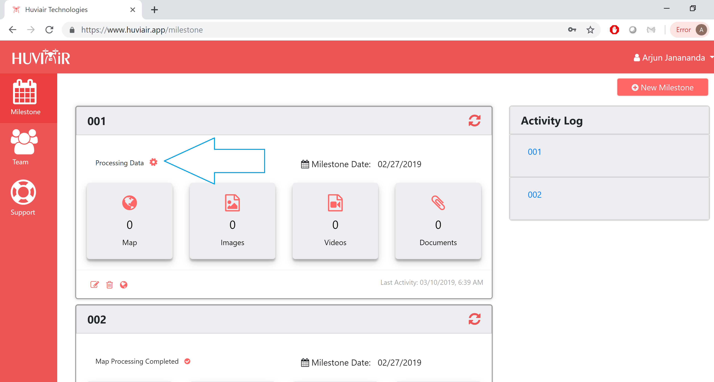

After you log in, click on the card that shows your project -

Click on Upload data button -

Next, Drag and Drop the drone images that need to be processed -

After that, click on Upload -

Upon Clicking on upload, the images start getting uploaded.
The map also shows you the location of each of the images from the drone. This helps you make sure that you have uploaded all the images that you need.

Once the images are uploaded, click on 'Back to Main' -

Next, Click on 'Click to Start Processing'

The data processing with start indicated by the rotating gear -

After the data is processed, you can click on the map to visualize the generated maps.